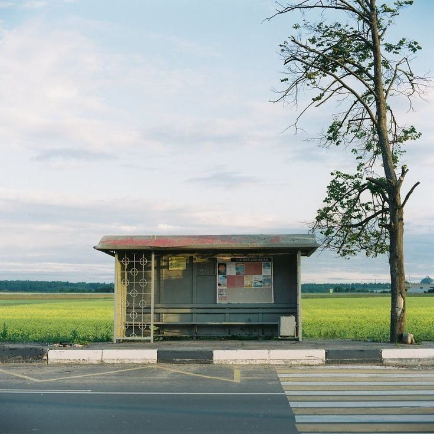

버스 세 노선, 주차 세 곳
오시는 길 · 주차
물레내장은 읍 터미널에서 장터길을 따라 5.4 km 떨어진 물레내 둑 아래에 있습니다.
군내버스
장날에는 11번이 20분, 11-1번이 60분 간격으로 늘어난다. 내리는 곳은 모두 물레내장 정류장이다
| 번호 | 노선 | 첫차 | 막차 | 평일 | 장날 | 터미널에서 |
|---|---|---|---|---|---|---|
| 11 | 읍 터미널 → 물레내장 → 갈골 | 06:10 | 20:30 | 40분 | 장날 20분 | 18분 |
| 11-1 | 읍 터미널 → 무넘이 → 물레내장 | 06:40 | 19:40 | 90분 | 장날 60분 | 26분 |
| 24 | 새터 → 큰골 → 물레내장 → 안골 | 07:00 | 18:30 | 하루 6회 | 장날 9회 | 22분 |
24번 시간표 (새터 출발)
- 07:00
- 08:20장날만
- 09:10장날만
- 10:30
- 12:00
- 13:40장날만
- 15:00
- 16:30
- 18:30
주차
세 곳 모두 합쳐 266면
- 86면
장터 공영주차장
처음 1시간 무료, 이후 30분마다 500원
장날 오전 9시 전후로 찬다 · 장마당까지 걸어서 1분
- 140면
둔치 임시주차장
무료
장날만 연다. 물레내 수위가 오르면 닫는다 · 장마당까지 걸어서 3분
- 40면
면사무소 주차장
무료
장날만 개방. 평일은 민원 차량용 · 장마당까지 걸어서 6분
장날 차량 통제
- 장마당길
- 장날 05:00~16:00 차가 들어갈 수 없다. 점포 짐차는 05:00 전에 들어오고 16:00 뒤에 나간다.
- 둑길
- 장날 07:00~15:00 한쪽으로만 다닌다(동쪽에서 서쪽).
- 장터길
- 정류장 앞 50 m는 버스만 선다.

배치도
정류장은 장터길 서쪽, P1은 동쪽, P2는 둑 아래 둔치